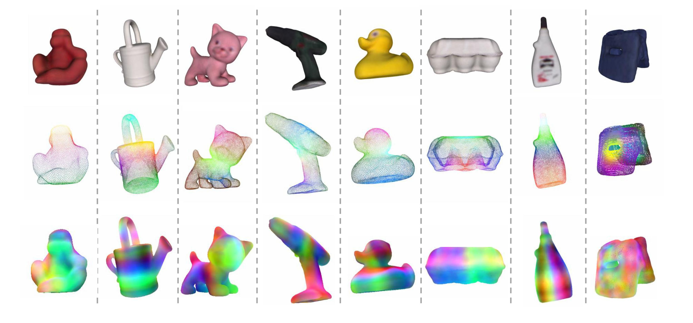
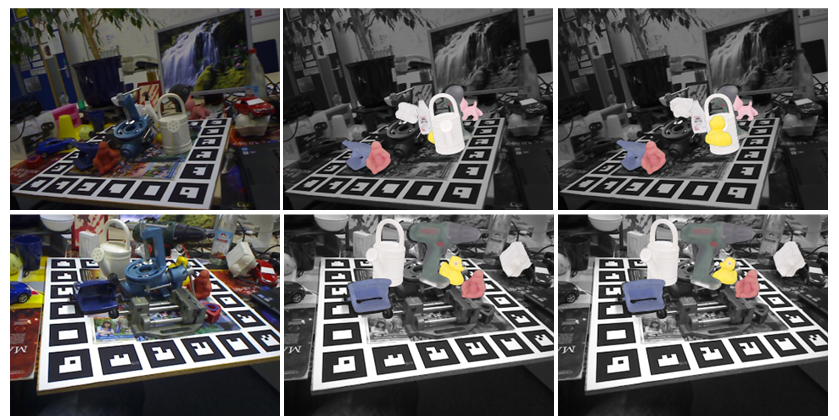
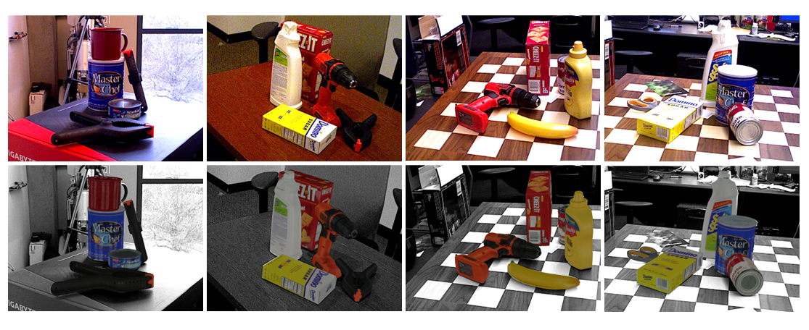
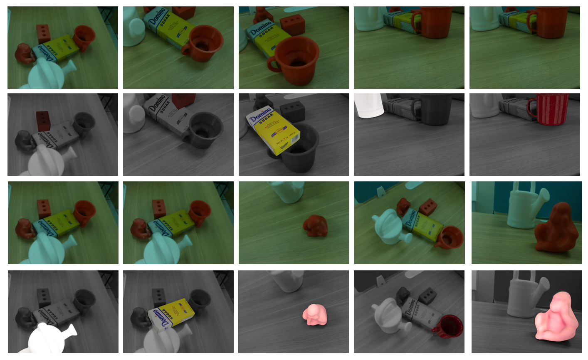

Accurate 6D pose estimation is key for robotic manipulation, enabling precise object localization for tasks like grasping. We present RAG-6DPose, a retrieval-augmented approach that leverages 3D CAD models as a knowledge base by integrating both visual and geometric cues. Our RAG-6DPose roughly contains three stages: 1) Building a Multi-Modal CAD Knowledge Base by extracting 2D visual features from multi-view CAD rendered images and also attaching 3D points; 2) Retrieving relevant CAD features from the knowledge base based on the current query image via our ReSPC module; and 3) Incorporating retrieved CAD information to refine pose predictions via retrieval-augmented decoding. Experimental results on standard benchmarks and real-world robotic tasks demonstrate the effectiveness and robustness of our approach, particularly in handling occlusions and novel viewpoints.
CAD and feature visualization for 8 objects from the LM-O dataset. For each object, the illustration includes three components arranged from top to bottom: the CAD model, the visual feature set F_p, and the key feature F_k.
From left to right, the images show the original scenes, predictions by our RAG-6DPose, and predictions by SurfEmb. In each case, the object's 3D model, aligned with the estimated 6D pose, is overlaid on the grayscale version of the original images.
The upper images show the original scenes, while the lower images display the object pose predictions made by RAG-6DPose. In these predictions, the object's 3D model, aligned using the estimated 6D pose, is overlaid onto the original images, which have been converted to grayscale.
The rows (1,3) show the original images, while rows (2, 4) display the object pose predictions from RAG-6DPose. In each case, the object's 3D model is aligned with the estimated 6D pose and overlaid on the grayscale version of the original images.
DINOv2 uses FlashAttention to speed up transformers. The CAD knowledge base is compact, with most parameters outside the knowledge base shared across objects. Foundation models also help reduce training time. Our network has two components: the Encoder-Decoder, which generates query features, and the Key Feature Extraction network, which creates key features and is saved locally. Inference times for a single object on the TUD-L dataset are 65ms for the Encoder-Decoder, compared to 61ms for MRCNet. Our model improves accuracy with minimal extra computational cost. Compared to SurfEmb, our total time, including PnP-RANSAC, is similar, but performance is significantly better. As with other advanced methods like 3DNEL, some external time is always required, but we aim to optimize this further.